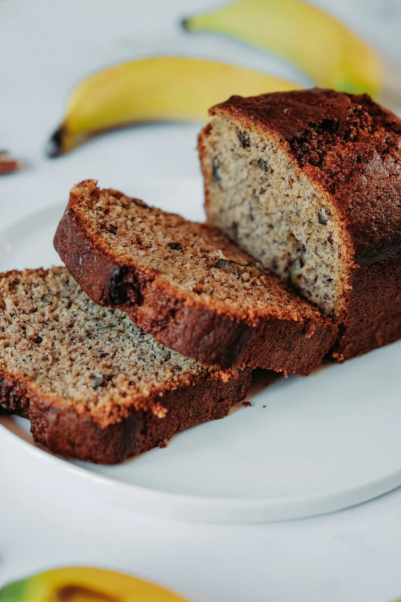

Banana Bread
Have a bunch of over-riped bananas just sitting on your countertop? Those are perfect to bake banana bread! This convenient pastry will make you go "Yum Yum In My Tum Tum"!

Image Source: Unsplash
Ingredients List
- 250g riped bananas, mashed
- 1/4 tsp baking soda
- 50g sweetened condensed milk
- 220g plain flour
- 1 tsp baking pwder
- 1/4 tsp salt
- 170ml vegetable oil
- 5 large eggs
- 100g caster sugar/soft brown sugar
Directions
Step 1
Preheat oven to 170 degrees C (340 degrees F). Lightly grease a 9x5 inch loaf pan.
Step 2
In a large bowl, add condensed milk to mashed banana.
Step 3
In a seperate large bowl, sift flour, baking powder and salt. Add vegetable oil and mix till well combined. Add mashed banana mixture into it and mix well.
Step 4
In another bowl, add in eggs and sugar. With a hand mixer, whisk mixture till it forms soft peaks.
Step 5
Incoporate egg mixture with the other bowl of ingredients. Slowly fold in the egg mixture. Avoid over-mixing as this will cause the air bubbles from the egg mixture to escape. Pour batter into prepared loaf pan
Step 6
Bake in preheated oven for 45 to 50 minutes, until a toothpick inserted at the highest point of the bread comes out clean. Let it cool in the pan for 15 minutes, then remove it from pan and let it cool on a wire rack.